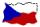

|
Ol¹ákovská domovská stránka
|
 |
|
Olsak's home page
|
|

|
|
Nar. 1963. Jsem odborný asistent na
katedøe matematiky FEL ÈVUT v Praze
a administrátor tamní sítì. Zabývám se pøedev¹ím vytváøením
podpory pro TeX, napsal jsem dvì knihy o TeXu, mno¾ství èlánkù a
podpùrného volnì ¹íøeného software. Odkazy na tyto vìci jsou zatím na
mé stránce.
Byl jsem pøedseda
Èeskoslovenského sdru¾ení u¾ivatelù TeXu
také jsem byl èlen výboru
Èeského sdru¾ení u¾ivatelù Linuxu.
Jsem èlenem senátu ÈVUT a
pøedseda legislativní komise.
|

|
Born in 1963. I am a teacher on
Departament of Mathematics FEL CVUT in Prague
and I am an administrator of the computer network of this
department. I also deal with the TeX support,
I have written two books about TeX,
many articles and I have coded supporting software.
This software is distributed as free of charge.
You can find more links about these topics on my
home page.
I was president of
Czech and Slovak TeX users group
and a was member of the board of
Czech Linux users group.
I am member of the Academic
Senate CTU and chairman of the Legislative Committee.
|
|

|
|
Nar. 1965. Vystudovala jsem klasickou matematiku, nyní se zabývám
informatikou. Pracuji ve spoleènosti GE. Mezi mé profesní zájmy patøí
zejména databázové aplikace (SQL, Java, PHP, HTML apod.) Vytvoøila
jsem www stránky pro obèanské sdru¾ení
Hnutí za aktivní mateøství,
jeho¾ jsem byla místopøedsedkyní.
|

|
Born in 1965. I have graduated the mathematics. Now, I deal with informatics.
I am working in GE Money Bank. My main interests are database
applications (SQL, Java, PHP, HTML etc.). I was a webmaster of
Movement for active motherhood and
I was a vicepresident of this fellowship.
|
|

|
|
Nar. 1991, syn Petra a Lídy. Jsem student
Matematicko-fyzikální fakulty University
Karlovy.
Anga¾uji se v matematickém koresponenèním semináøi
V minulosti jsem naprogramoval
rùzné hry pro Linux.
Také jsem navrhnul algoritmy
a spolupracoval s otcem na programování
programu grid.
|

|
Born in 1991, son of Petr and Lída. I am student of the
Faculty of Mathematics and Physics.
I get involved in math. correspondence
seminar.
I have programmed
many games for Linux.
Moreover, I developed algorithms for
program grid with my
father.
|
|

|
|
Nar. 1999, syn Petra a Lídy. Jsem student soukromého
Mensa gymnázia. Døíve se toto
gymnázium jmenovalo Buïánka a studoval tam mùj bratr.
|

|
Born in 1999, son of Petr and Lída.
I am student of the
private high school of
Mensa.cz. This school was named Budanka and my brother studied here.
|
|
|
Expedice Hron 2003
| | |
Expedition Hron 2003
|
|
Expedice Dunaj 2004
| | |
Expedition Donau 2004
|
|
Olsakovy fotky
| | |
Olsak's photos
|
|

|